Mom Practical 4
This is the last of Simple Momentum Factor series. It will deal the practical issues.
Contents
Alternative MOM signal
I have been using 12-1 month arithmetic return as MOM signal. Here I want to exam another two type of MOM.
- MOM using 12 month return instead of 12-1 month return
- MOM using 12-1 month return normalized using 12-1 month volatility
load the data
load('data_equity_list_us.mat'); load('data_field_list.mat'); load('data_historical_data_us.mat');
take data sample, load data & the list
index = datasample(1:1300,1000,'Replace',false);
px = fun_load_price(history_us, equity_list_us, index);
px = fun_clean_data(px);
list = equity_list_us(index,:);
generate the observation
mom_ts = fun_calculate_mom_alt(px,'12-1m'); mom_12_ts = fun_calculate_mom_alt(px,'12m'); mom_6_ts = fun_calculate_mom_alt(px,'6m'); mom_24_ts = fun_calculate_mom_alt(px,'24m'); mom_normalized_ts = fun_calculate_mom_alt(px,'normalized'); mom_1_ts = fun_calculate_mom_alt(px,'1m');
generate scores
score_ts = fun_calculate_score(mom_ts,list,'fullsort'); score_12_ts = fun_calculate_score(mom_12_ts,list,'fullsort'); score_6_ts = fun_calculate_score(mom_6_ts,list,'fullsort'); score_24_ts = fun_calculate_score(mom_24_ts,list,'fullsort'); score_normalized_ts = fun_calculate_score(mom_normalized_ts,list,'fullsort'); score_1_ts = fun_calculate_score(mom_1_ts,list,'fullsort');
calculate portfolio weight
portfolio_weight_ts = fun_portfolio_weight_sector_neutral(score_ts,'topm',0.1); portfolio_weight_12_ts = fun_portfolio_weight_sector_neutral(score_12_ts,'topm',0.1); portfolio_weight_6_ts = fun_portfolio_weight_sector_neutral(score_6_ts,'topm',0.1); portfolio_weight_24_ts = fun_portfolio_weight_sector_neutral(score_24_ts,'topm',0.1); portfolio_weight_normalized_ts = fun_portfolio_weight_sector_neutral(score_normalized_ts,'topm',0.1); portfolio_weight_1_ts = fun_portfolio_weight_sector_neutral(score_1_ts,'topm',0.1);
calculate portfolio return
portfolio_rt_ts = fun_portfolio_return(px, portfolio_weight_ts); portfolio_rt_12_ts = fun_portfolio_return(px, portfolio_weight_12_ts); portfolio_rt_6_ts = fun_portfolio_return(px, portfolio_weight_6_ts); portfolio_rt_24_ts = fun_portfolio_return(px, portfolio_weight_24_ts); portfolio_rt_normalized_ts = fun_portfolio_return(px, portfolio_weight_normalized_ts); portfolio_rt_1_ts = fun_portfolio_return(px, portfolio_weight_1_ts);
plot the result
plot(cumsum(portfolio_rt_ts)); legend('off'); hold on; snapnow; sqrt(12)*sharpe(fts2mat(portfolio_rt_ts),0) plot(cumsum(portfolio_rt_12_ts)); legend('off'); snapnow; sqrt(12)*sharpe(fts2mat(portfolio_rt_12_ts),0) plot(cumsum(portfolio_rt_6_ts)); legend('off'); snapnow; sqrt(12)*sharpe(fts2mat(portfolio_rt_6_ts),0) plot(cumsum(portfolio_rt_24_ts)); legend('off'); snapnow; sqrt(12)*sharpe(fts2mat(portfolio_rt_24_ts),0) plot(cumsum(portfolio_rt_normalized_ts)); legend('off'); snapnow; sqrt(12)*sharpe(fts2mat(portfolio_rt_normalized_ts),0) plot(cumsum(portfolio_rt_1_ts)); legend('off'); snapnow; sqrt(12)*sharpe(fts2mat(portfolio_rt_1_ts),0) hold off;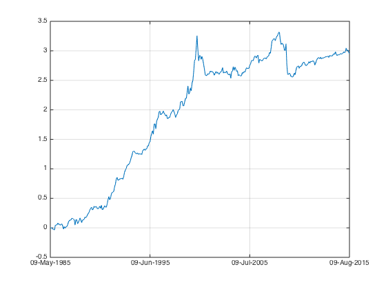
ans =
0.5352
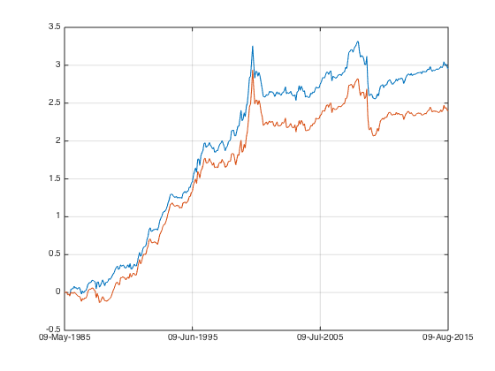
ans =
0.4238
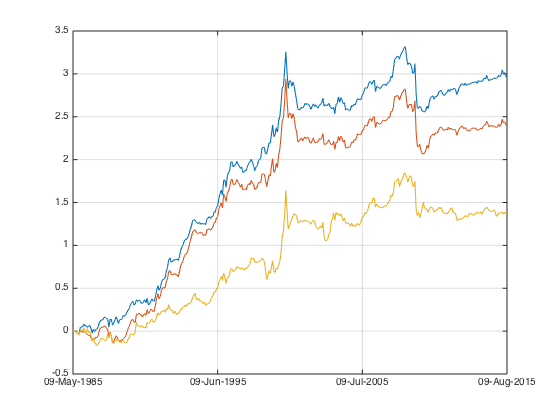
ans =
0.2680
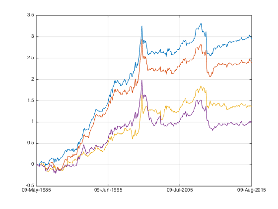
ans =
0.1922
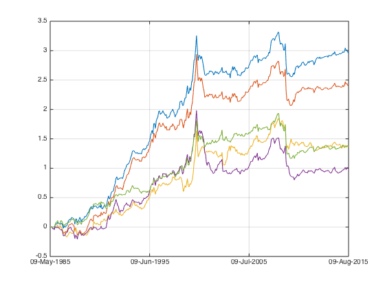
ans =
0.3044
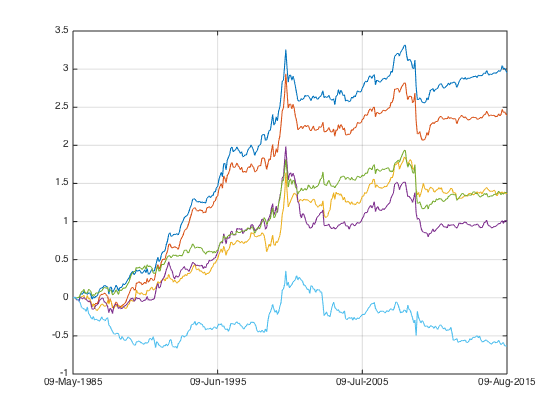 ans = -0.1391
normalized is an interesting case, let's take a look at the long only top 100 portfolio.
calculate portfolio weight
portfolio_weight_ts = fun_portfolio_weight_sector_neutral(score_ts,'topmlongonly',0.1); portfolio_weight_12_ts = fun_portfolio_weight_sector_neutral(score_12_ts,'topmlongonly',0.1); portfolio_weight_6_ts = fun_portfolio_weight_sector_neutral(score_6_ts,'topmlongonly',0.1); portfolio_weight_24_ts = fun_portfolio_weight_sector_neutral(score_24_ts,'topmlongonly',0.1); portfolio_weight_normalized_ts = fun_portfolio_weight_sector_neutral(score_normalized_ts,'topmlongonly',0.1); portfolio_weight_1_ts = fun_portfolio_weight_sector_neutral(score_1_ts,'topmlongonly',0.1);
calculate portfolio return
portfolio_rt_ts = fun_portfolio_return(px, portfolio_weight_ts); portfolio_rt_12_ts = fun_portfolio_return(px, portfolio_weight_12_ts); portfolio_rt_6_ts = fun_portfolio_return(px, portfolio_weight_6_ts); portfolio_rt_24_ts = fun_portfolio_return(px, portfolio_weight_24_ts); portfolio_rt_normalized_ts = fun_portfolio_return(px, portfolio_weight_normalized_ts); portfolio_rt_1_ts = fun_portfolio_return(px, portfolio_weight_1_ts);
plot the result
plot(cumsum(portfolio_rt_ts)); legend('off'); hold on; snapnow; sqrt(12)*sharpe(fts2mat(portfolio_rt_ts),0) plot(cumsum(portfolio_rt_12_ts)); legend('off'); snapnow; sqrt(12)*sharpe(fts2mat(portfolio_rt_12_ts),0) plot(cumsum(portfolio_rt_6_ts)); legend('off'); snapnow; sqrt(12)*sharpe(fts2mat(portfolio_rt_6_ts),0) plot(cumsum(portfolio_rt_24_ts)); legend('off'); snapnow; sqrt(12)*sharpe(fts2mat(portfolio_rt_24_ts),0) plot(cumsum(portfolio_rt_normalized_ts)); legend('off'); snapnow; sqrt(12)*sharpe(fts2mat(portfolio_rt_normalized_ts),0) plot(cumsum(portfolio_rt_1_ts)); legend('off'); snapnow; sqrt(12)*sharpe(fts2mat(portfolio_rt_1_ts),0) hold off;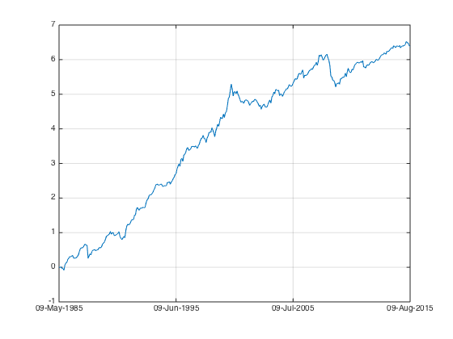
ans =
0.8371
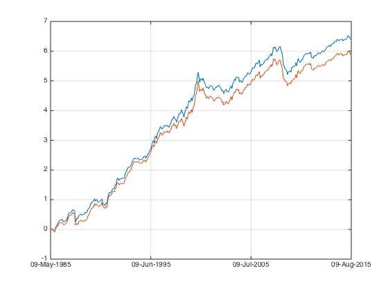
ans =
0.7846
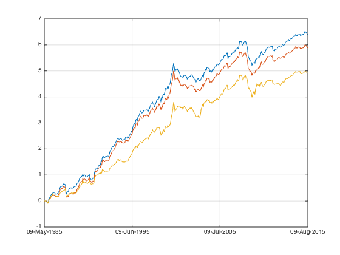
ans =
0.6865
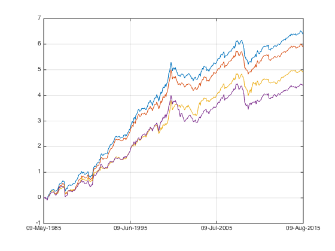
ans =
0.5863
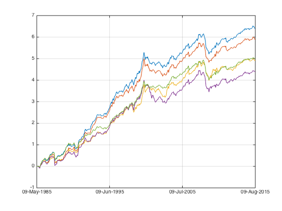
ans =
0.8184
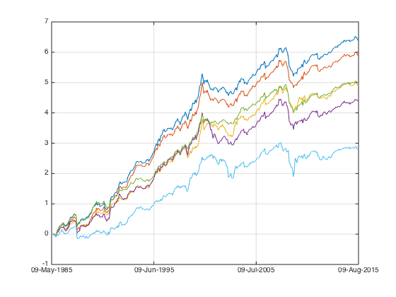
ans =
0.3710
Conclusion
- normalization worked.
- short term (1m) reversal exists.
- dotcom bubble means, momtum signal presents in all period. a very abnormal period where 1m and 24m MOM all moved up.
- 24m MOM up is a good indication that market is going to correct soon.
- 12-1m v.s. 12m the difference is in 1m reversal.
- apparently I can dive deeper into this topic, but let's leave it for another day.